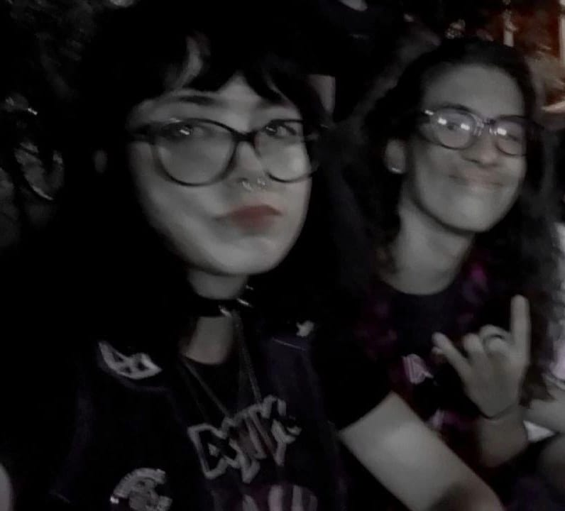
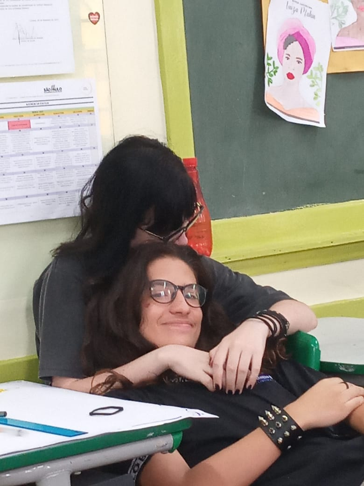
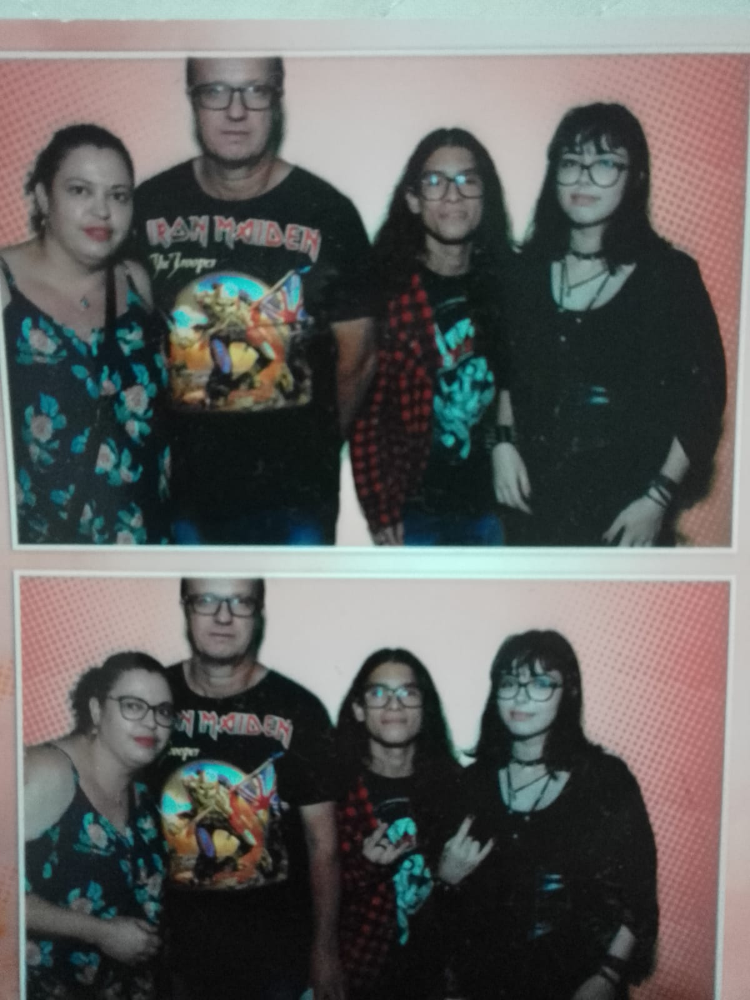
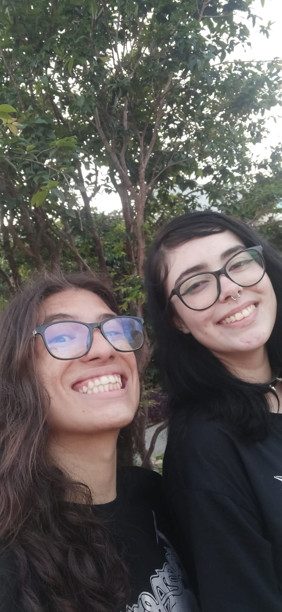

Seja Bem Vinda Kamilly Von Rinck!
A história começa desde que eu entrei na sala no primeiro dia de aula, e acabei dando uma atenção maior pra ela do que pra qualquer pessoa na escola, e me causou com certeza uma boa impressão. Minha maior tristeza foi descobrir que era a sala errada e que a minha ficava logo a frente, mas na realidade não me fazia tão mal, afinal, quem poderia imaginar que alguém seria capaz de ficar comigo (era oque eu tinha na cabeça).
Por coincidência, um dia eu vi essa garota usando um óculos igual ao que Kurt Cobain usava, e assim, sem pretenção nenhuma eu elogiei e saí fora, foi o suficiente pra que mais tarde começassemos a conversar e virassemos amigos, seu nome é Kamilly Von Rinck, (Amor da minha vida.) Passamos um dia inteiro juntos (Saint Patrick's Day) e aí resolvemos sair como "amigos"... (até parece).

E nós fomos...
Nos divertimos bastante esse dia, era um cover de iron maidem, foi tudo simplesmente incrivel, e só melhorou quando nosso amigo me contou por menssagem que ela realmente gostava de mim, foi perfeito. Fui falar com ela (de forma rude e assustadora) nós conversamos um pouco sobre e ali finalmente tinhamos começado nosso relacionamento, estavamos ficando mas de kamilly, passei a chamar ela de Amor e ela fez o mesmo, ficamos por um mês até que em uma noite no cinema, eu fui finalmente falar com os pais do meu amor para pedir a benção do namoro.

Chegando pra finalmente fazer o pedido (pros pais da minha amada), eu por algum motivo estava bem nervoso, provavelmente por que eu não tinha expectativa do que os pais dela poderiam me falar, mas no final das contas tudo que eu ouvi foi uma lista de diagnósticos e a liberdade pra que eu finalmente pudesse pedir oficialmente, a gente marcou esse dia com uma foto na maquína de fotos. no primeiro dia da semana eu preparei bilhetinhos e finalmente, fiz o pedido, e o mais surpreendente, ELA ACEITOU! e hoje em dia sou grato por tudo que ela me faz e também quero dizer que te amo muuuuuito!!


Espero que tenha gostado amor, TE AMO MTOO
Do seu amorzinho, Luiz Otávio